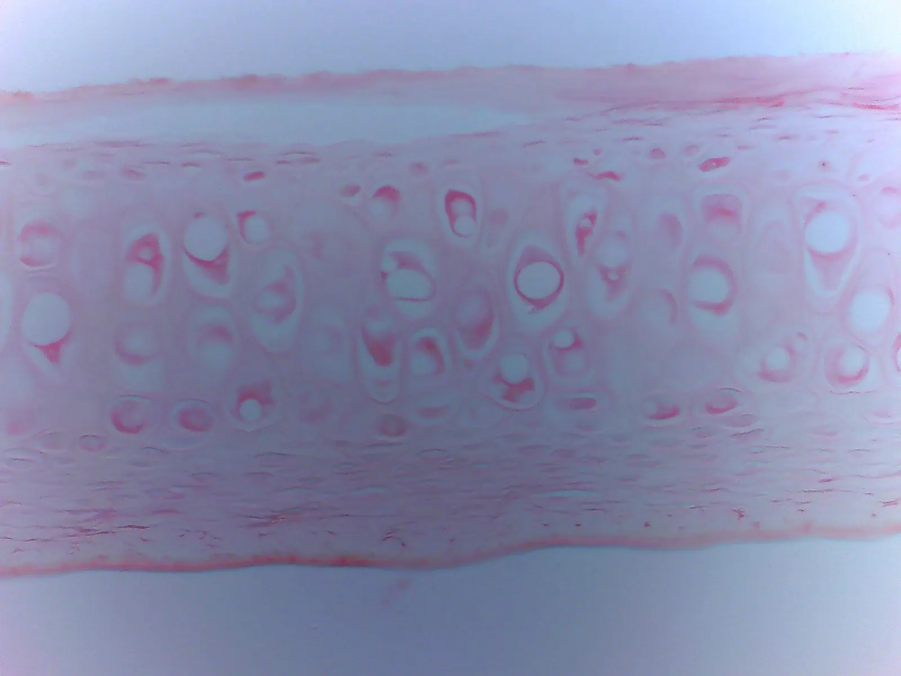
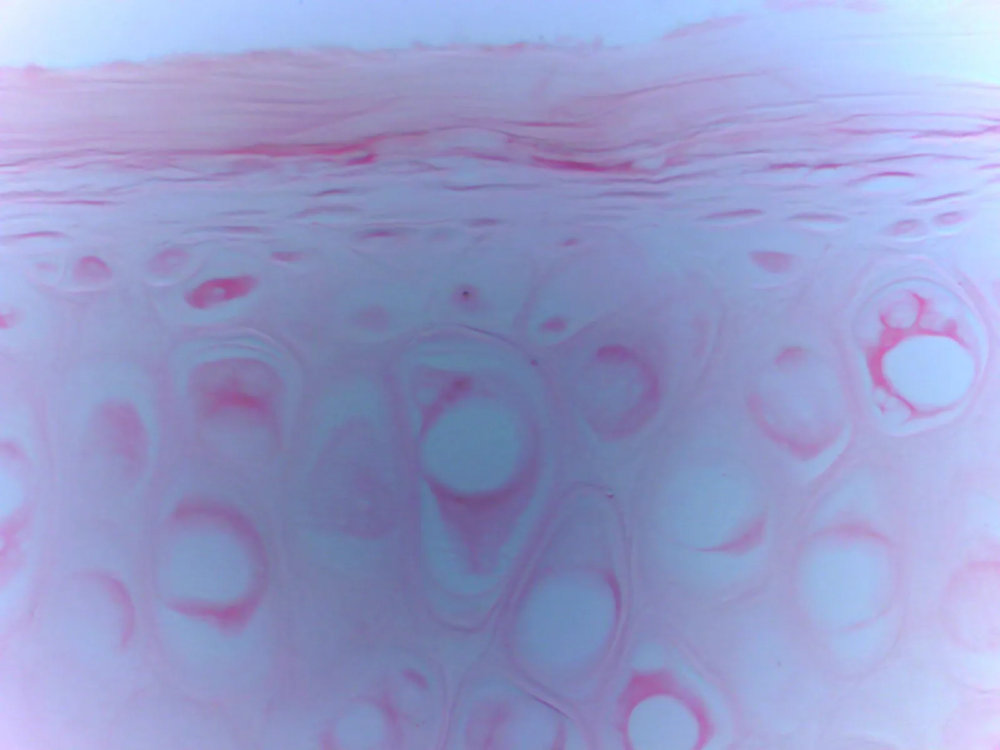

Lâmina 12 · Cartilagem e osso
Cartilagem hialina


Toque na imagem para ampliar. No computador, use as setas do teclado para trocar de imagem.
Lâmina 12 · Cartilagem e osso


Toque na imagem para ampliar. No computador, use as setas do teclado para trocar de imagem.